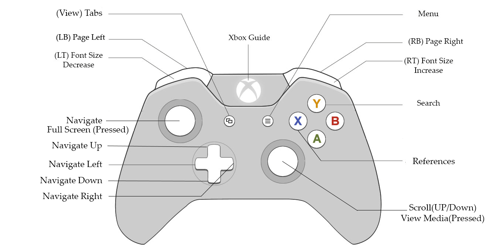
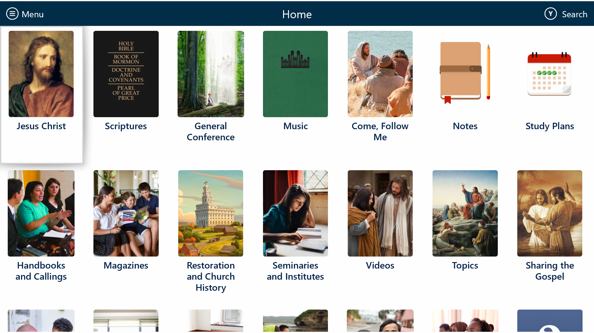
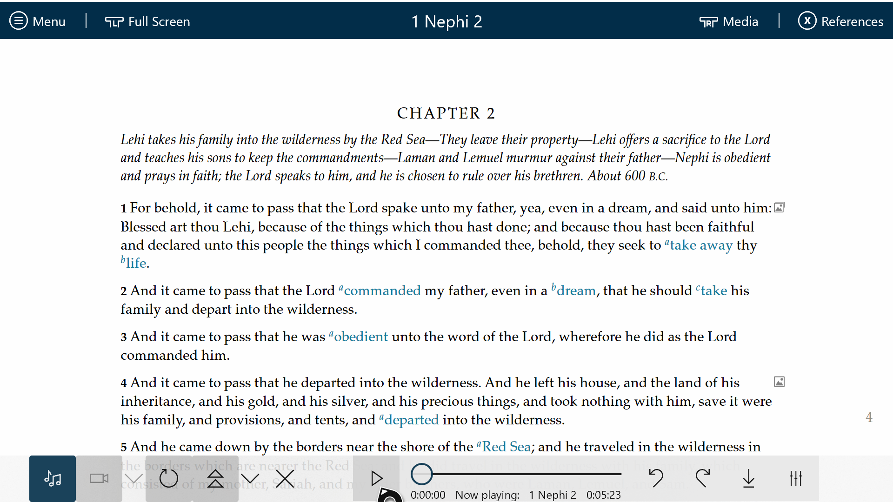

The XBox uses an operating system similar to Windows and Gospel Library for windows has been adapted to work with the XBox. Using the XBox makes it possible to easily use the a large screen television for the family to read scriptures, listed to scriptures, watch videos and study Come Follow Me lessons together.
The Gospel Library for Windows is an app available at the Microsoft Store and can easily be loaded onto the XBox using the same proceedure for other apps. A beta version of the app is also available with the latest features, but may contain some bugs. As with our other beta apps, we encourage the useres to test the new software and give us feedback.
Gospel Library for Windows has been modified so that it can be used with the XBox Controller. The functions of the controller are shown below:
| (View) Tabs | mouse - new tab | displays the current tabs for selection and creation of tabs |
| (LB) Page Left | mouse - "<" | Navigates to the previous chapter within a book. |
| (LT) Font Size Decrease | Settings - Appearance - Text Size | Each click decreases the font size. |
| Navigate | Mouse roaming | Navigates the curser around the screen much like a mouse. |
| Full Screen (Pressed) | Mouse double left click | Toggles the screen to permit display of only the content. |
| Navigate Up | Kayboard - up arrow | Navigates the curser one step in the up direction. |
| Navigate Left | Kayboard - left arrow | Navigates the curser one step in the left direction. |
| Navigate Down | Kayboard - down arrow | Navigates the curser one step in the down direction. |
| Navigate Right | Kayboard - right arrow | Navigates the curser one step in the right direction. |
| XBox Guide | Mouse - click X on upper right corner | Used to exit the app. |
| Menu | Mouse - click upper left corner | Displays the various menu options which can be navigated with the arrow controls and selected with the A button. |
| (RB) Page Right | mouse - ">" | Navigates to the next chapter within a book. |
| (RT) Font Size Increase | Settings - Appearance - Text Size | Each click increases the font size. |
| (Y) Search | Mouse - click search icon | A shortcut for selecting "search" from the menu. |
| (B) Back | Mouse - click left arrow | Goes to the previous screen. Allows the user to exit selected states. |
| (A) Select | Mouse - click | Selects whatever is pointed to by the cursor. |
| (X) References | Mouse - click references icon | Toggles the display of the references on and off. |
| (A) Scroll (Up/Down) | Mouse - wheel up and down | Scrolls the displayed text up and down. |
| View Media (Pressed) | Mouse - click the top media tab. | Toggles the media bar on and off. |
The home library can be returned to from any screen with just two key strokes. Just press the menu key followed by the A key (the default menu selection is Library).
The XBox supports navigation using many of the options but the user interface no longer includes the mouse, touch screen or keyboard. This section will demonstrate how to easily navigate using the XBox controller
The first step of navigation is to return to the home screen containing the highest level access to the library. This can be easily done from anywhere in the program by pressing the menu key followed by the A key. This will bring up the screen shown below.
The arrow keys are then used to highlight the desired section of the library. The A key is used to select a section. Any entry in the library can be accessed by drilling in using only the arrow keys and the A key. The B key may be used to move back up into the previously selected section.
Much of the Gospel Library content has video and/or audio to support it. In some cases the support is a link and can be accessed by simply moving the cursor to the link and the pressing the A button. Other content is accessed through the media bar. The shortcut for toggling the media bar on and off is pressing the lower right control used for scrolling. The media bar is displayed below the content as shown in this illustration.
The use of the navigation bar is described in Chapter 15: How Do I Watch or Listen to Gospel Content?